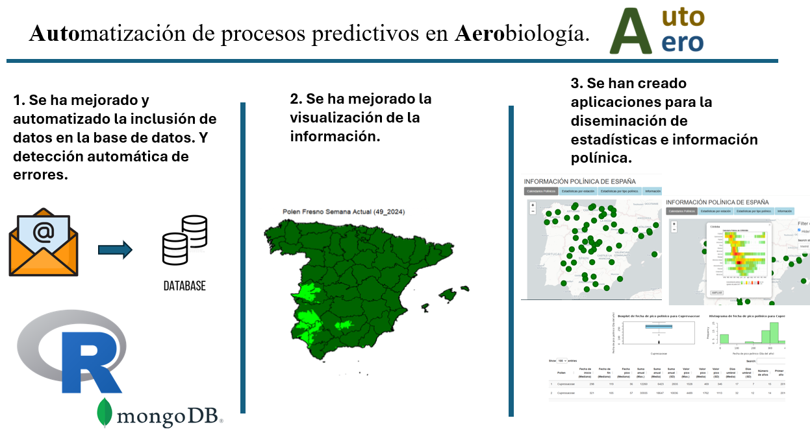
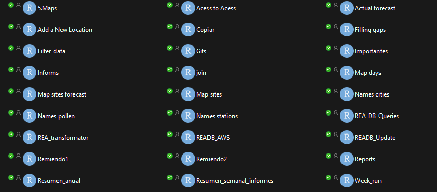

Inicio
AutoAero es un proyecto del Grupo de Aerobiología de la Universidad de Córdoba, orientado a digitalizar y automatizar la gestión de los datos polínicos que maneja el grupo (centro coordinador de la Red Española de Aerobiología). El resultado es una base de datos unificada, limpia y actualizable de forma automática que sirve de base para la elaboración de productos científicos y aplicaciones interactivas.
Las visualizaciones derivadas del sistema pueden consultarse en la página de la Red Española de Aerobiología:
1
Automatización de la inclusión y validación de datos en la base de datos central.
2
Integración en MongoDB y copia de seguridad en CSV para análisis y respaldo.
3
Mejora de la visualización y actualización de la información polínica.
4
Creación de aplicaciones web para la consulta y el cálculo de índices polínicos.
1. Sistema de datos
El grupo ha desarrollado un sistema automatizado de integración que recibe los ficheros semanales procedentes de distintos laboratorios, detecta el formato, valida los nombres y estructura la información en una base de datos externa. Este sistema también genera copias de seguridad en CSV y scripts de acceso para facilitar la reutilización de los datos.
Principales avances del sistema

Estructura general del sistema de archivos y procesos

2. Información polínica y productos
La información generada se visualiza mediante herramientas interactivas que permiten explorar mapas y estadísticas polínicas en tiempo real. El sistema mejora la calidad de los datos y su accesibilidad, sirviendo como base para futuros modelos predictivos y productos de transferencia.
3. Aplicaciones y herramientas
En el marco de AutoAero se han desarrollado aplicaciones web que utilizan la infraestructura de datos creada durante el proyecto:
Estas herramientas facilitan la consulta de información polínica sin necesidad de conocimientos de programación y están abiertas a la comunidad científica y médica.
4. Redes y diseminación
Como resultado del proyecto se activaron nuevos canales de comunicación del grupo para difundir los avances científicos y tecnológicos desarrollados:
5. Sobre el proyecto
Título completo: Automatización de procesos predictivos en Aerobiología (Auto-Aero).
Código del proyecto: TED2021-130084B-I00
Investigadores principales (IP): Carmen Galán Soldevilla y José Antonio Oteros Moreno.
Otros investigadores: Herminia García Mozo y Purificación Alcázar Teno.
Personal contratado del proyecto: María José Tenor Órtiz.
Entidad ejecutora: Universidad de Córdoba.
Financiación: Proyecto financiado en el marco del Plan de Recuperación, Transformación y Resiliencia (PRTR) con fondos de la Unión Europea – NextGenerationEU.
Desarrollado por el Grupo de Aerobiología de la Universidad de Córdoba.
La infraestructura creada servirá de base para futuros sistemas automáticos de vigilancia aerobiológica.